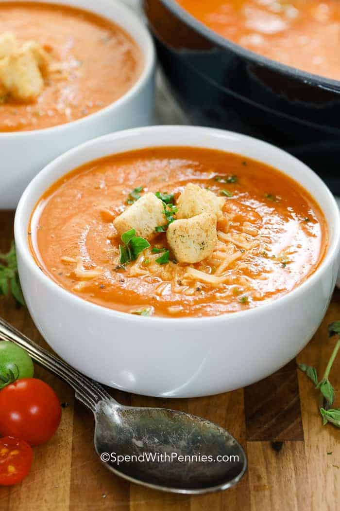

Tomato Cream Soup

Description
The tomatoes are roasted with a hint of garlic to bring out the natural flavor and then blended to a creamy finish. Velvety rich, jam-packed with flavor, and easy to make!! The best tomato soup recipe is simple and made with fresh ingredients just like this recipe.
This easy soup can be prepared in under an hour making it the perfect weeknight meal!
Ingridients
- tomatoes - 2kg
- bell pappers - 500gr
- broth - 2l
Instructions
- Place tomatoes and peppers on a pan with olive oil and seasonings. Roast until you see a bit of char.
- Bring broth to a boil and add roasted tomatoes.
- Blend using a hand blender until smooth & creamy.
- Top with parmesan cheese or a drizzle of heavy cream if you prefer